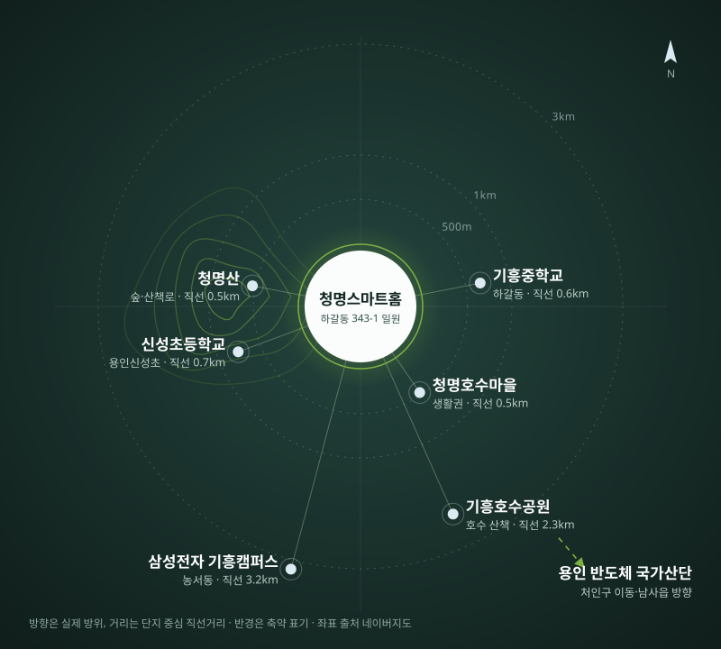

1 / 6
약 1,900평 대지에 15필지만 나눴습니다
청명산 기슭의 대지를 15개 필지로 나누고, 필지마다 모듈형 단독주택 한 채를 앉힙니다. 이웃과는 담장 하나 거리, 숲과는 마당 하나 거리입니다.

타입별 모듈주택
실제 시공 사례를 참고해 규모와 스타일별로 다섯 타입의 모듈형 하우스를 제안드립니다.
출퇴근은 가깝게, 아이 학교는 걸어서
삼성전자 기흥캠퍼스와 같은 기흥구 생활권이고, 하갈동에는 중학교(2027년 2월 개교 예정)가 새로 들어섭니다. 초등학교는 걸어서 다닐 수 있는 거리입니다.
